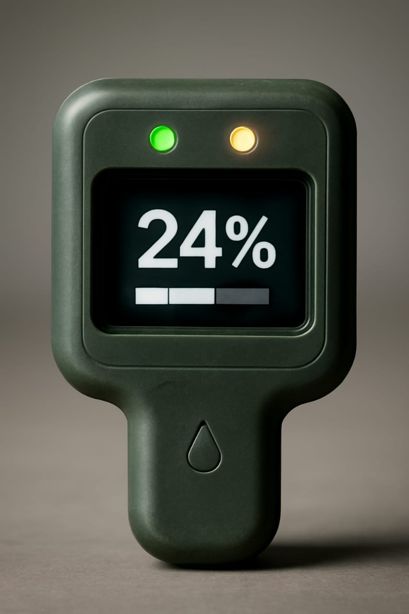

En un mundo donde los recursos hidricos son cada vez mas valiosos y los daños por fugas de agua representan perdidas economicas y ambientales, nuestro proyecto se presenta como una solucion tecnologica, innovadora, practica y accesible.
Este sensor inteligente de detección de fugas que te alerta en tiempo real para prevenir daños costosos. Con pantalla digital, indicadores LED y fácil instalación, es la solución que necesitas para conservar el agua y proteger tu propiedad.
¡Protege tu Hogar Ahora!
Visualiza claramente el porcentaje de humedad detectada en tiempo real con nuestra pantalla digital de fácil lectura.
Diseño compacto y portátil que se instala en minutos sin necesidad de herramientas especiales o conocimientos técnicos.
Construcción resistente que garantiza durabilidad y funcionamiento confiable en diferentes condiciones ambientales.
Tecnología avanzada que detecta niveles anormales de humedad y fugas de agua en tiempo real.
Sistema de comunicación inalámbrica que te mantiene conectado sin cables ni complicaciones.
Batería de larga duración que garantiza protección continua con mínimo mantenimiento.
Operación Normal
Sin presencia crítica de agua. Tu hogar está protegido y funcionando correctamente.
Alerta de Fuga
Posible fuga o acumulación de humedad detectada. Revisa la zona inmediatamente.
¿Listo para prevenir daños costosos por fugas de agua? Contáctanos y obtén tu Sensor De Deteccion de Fugas de Agua.